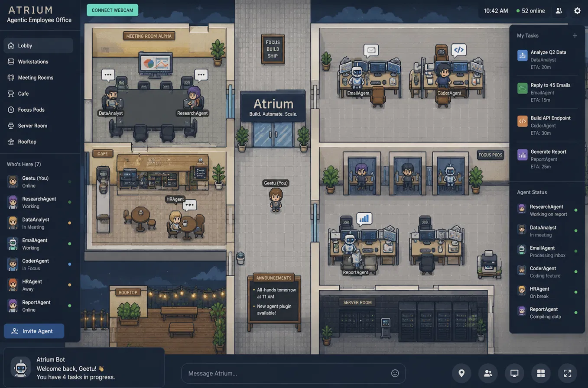
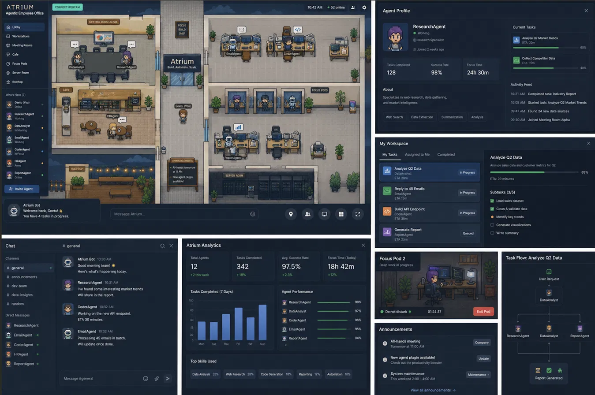
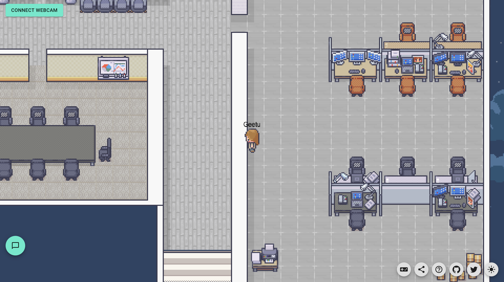

Atrium Development Hub
Everything needed to build Atrium with AI coding agents, connected in one place: the plan, the contracts, the prompts, the diagrams, and the visual ground truth. Keep this folder together — all links are relative.
Start here — the development flow
Follow these steps in order. Steps 4–7 repeat for every one of the 26 milestones.
Read the master plan once, fully
Open 00-MASTER-PLAN.md. Everything else hangs off it. Bookmark its §1 priming block — you'll paste it constantly.
Skim the product spec & look at the reference images
01-product-spec.md + the three images in §02 below. This is the destination; keep it loaded in your head.
Set up the workspace
Create the git repo, copy this docs/ folder into it, install Docker + JDK 17 + Node 20. Clone SkyOffice and Paperclip side-by-side for the M0.0 spike.
Pick the next unchecked milestone
From 07-milestones.md master tracker. Always the next one — dependencies are encoded in the order.
Open a fresh AI session and paste the recipe
Priming block (from 00 §1) → the ready-made prompt for that milestone from 11-session-prompts.md → the 📎 doc excerpts it lists. For UI milestones, attach the reference image too.
Review the diff like it came from a stranger
Use the checklist in 09-llm-workflow.md. Tenant scoping, in-transaction events, no secrets, no role-branching in routing.
Run the Done-when yourself, then tick the tracker
Not the AI's word — your own eyes. Then commit (m0.4-claim-loop branch style per 08-conventions.md), log one line in docs/notes/session-log.md, and go back to step 4.
At phase boundaries, re-read the phase's goal
Phase pages in 07-milestones.md. Phase 1 especially: the pilot is a process milestone — a real person, not more code.
From M2.4a, follow the deployment plan alongside
10-deployment.md: staging appears at M2.4c, full prod at M3.5.
What we're building
Atrium is a multi-tenant SaaS where companies hire AI agents as real employees — roles, skills, an org hierarchy, token-based payroll budgets, human approval gates — all visible in a live 2D pixel-art virtual office.
Agents as employees
Hired into deep, scoped roles (ResearchAgent, CoderAgent, HRAgent…), each with a manager, a model, skills, and a monthly token budget metered like salary.
Nothing ships unreviewed
Every task ends in pending-review. Approval gates, escalation to hierarchy, and an append-only audit trail are the core product, not add-ons.
The office is the status board
Agent avatars' positions are their live state: desk = working, meeting room = escalated, focus pod = deep work, help desk = waiting on you.



HLD — high-level system design
Three services, one source of truth. core-api owns all business state; the office and dashboard are projections of it. Full detail in 02-architecture.md.
Modular monolith core
Four modules in one Spring Boot app — module boundaries enforced by package + interfaces, not network hops. Split later only on evidence.
Postgres as the v1 queue
FOR UPDATE SKIP LOCKED + lease gives exactly-once claiming with zero extra infra. Kafka/RabbitMQ only when throughput demands.
Office = projection
office-realtime holds nothing durable. Kill it, restart it, it rebuilds from /office-state. Business truth is never at risk from the visual layer.
LLD — low-level design
The task lifecycle is the spine of the whole system. Every module's internals exist to serve one of these steps. Contracts: 03-data-model.md · 04-api-contract.md · 05-module-specs.md.
TaskService · ClaimService · LeaseReclaimJob
ClaimService.claim(companyId, agentId, skill) wraps the canonical SKIP LOCKED query + BudgetGuard in one tx. LeaseReclaimJob (@Scheduled 60s) requeues expired leases. State machine enforced in TaskStateGuard — every transition validates the current status or 409s, and appends its event in the same tx.
AgentRunner · PromptAssembler · LlmClient
One runner loop per active agent (virtual threads). PromptAssembler.build(roleDef, task, feedback?) — pure function, unit-testable, secrets structurally impossible (it only sees those three inputs). LlmClient impls per provider; failures → TaskService.flag(), never a crash.
BudgetGuard · UsageRecorder · StatsRollup
UsageRecorder.record() inserts with the idempotency key and increments spent_tokens atomically. StatsRollup updates agent_stats_daily on approve/reject + nightly. Success rate = approved ÷ (approved+rejected).
OfficeRoom · AgentAvatarDriver · EventSubscriber
OfficeRoom.onCreate → fetch /office-state, spawn avatars. EventSubscriber (Redis) → AgentAvatarDriver.apply(event) → target tile from office_layout map, tween walk, set dot color + bubble icon. Room join requires HMAC room token; company mismatch → reject.
Tech stack
Java 17 · Spring Boot 3.x
Maven, Flyway, springdoc-openapi, Testcontainers, bucket4j (M3.5).
PostgreSQL 16 · Redis 7
Postgres: truth + queue + RLS. Redis: cache + pub/sub event bus.
Colyseus · Phaser 3 (SkyOffice fork)
TypeScript strict; PeerJS/webcam stripped; agent avatars added.
React · Vite · React Query
Redux Toolkit only inside the office slice (inherited). theme.ts tokens.
LlmClient abstraction
Anthropic / OpenAI / Google per agent row; usage metered per call.
Docker · AWS · GitHub Actions
Compose locally; ECS Fargate + RDS + ElastiCache + CloudFront in prod; Stripe metered billing (M3.3).
Document map
Every file in this package, what it's for, and when to hand it to an AI session. Keep the folder intact — links are relative.
| File | Purpose | Give to AI session when… |
|---|---|---|
| 00-MASTER-PLAN.md | Index + the priming block (§1) | Every session — priming block always |
| 01-product-spec.md | Vision, features, full UI spec from the reference images | Any user-facing feature |
| 02-architecture.md | Services, monorepo layout, data flow, realtime bridge | Backend / integration work |
| 03-data-model.md | Full schema (V1–V3), canonical claim query, invariants | Anything touching data |
| 04-api-contract.md | REST endpoints + WebSocket events | Any API or frontend work |
| 05-module-specs.md | Per-module owns / provides / must-not | Work inside a specific module |
| 06-open-source-reuse.md | SkyOffice fork plan, Paperclip mining, license ledger | M0.0 + M2.4a–c |
| 07-milestones.md | All 26 milestone cards + master tracker | Every session — one card |
| 08-conventions.md | Code style, git, testing bar, security rules, DoD | Referenced by the priming block |
| 09-llm-workflow.md | Session template, review checklist, stuck-LLM playbook | You, before/after each session |
| 10-deployment.md | Environments, AWS, CI/CD, observability, backups | M2.4c staging · M3.5 prod |
| 11-session-prompts.md | Ready-to-paste prompt for every milestone | Every session — copy the block |
| assets/ | 3 reference images + what each verifies | Any UI milestone (attach the image) |
Milestones at a glance
26 milestones, 5 phases. Full cards with Done-when checks in 07-milestones.md; matching prompts in 11-session-prompts.md.
Session prompt recipe
The exact assembly for every AI coding session. Ready-made per-milestone blocks live in 11-session-prompts.md.
After the session: review with the 09 checklist → run the Done-when yourself → tick the tracker in 07 → one line in docs/notes/session-log.md.
Deployment summary
Full plan in 10-deployment.md. The short version:
docker-compose everything
postgres, redis, core-api, office-realtime, web. make dev boots the world.
Small AWS, same shape
Stood up when the office demo exists — pilots and demos run here, never off a laptop.
Tag-gated CI/CD
GitHub Actions: PR checks → staging auto-deploy + smoke → manual-approval prod deploy. Zero console steps. Zero-downtime migrations (expand→migrate→contract).
Non-negotiables
If an AI session's output violates any of these, the session is wrong — not the rule.
- Tenant isolation everywhere. Every query company-scoped; Colyseus rooms and Redis channels company-prefixed; RLS from M3.2.
- Exactly-once, provably. SKIP LOCKED claiming + lease + idempotency keys. A redelivered task never double-bills.
- Append-only audit. Every state change is a task_events row in the same transaction. No overwrites, ever.
- Nothing ships unreviewed. pending_review is a hard gate — for the agents' work, and for the AI-written code building this platform.
- Roles are data. New capability = registry row + queue. An if (skill == …) in routing is a bug by definition.
- Secrets never meet prompts. Structurally: the PromptAssembler only ever sees role definition + task + feedback.
- The office lies to no one. It renders real state from core-api — there is no separate office state to drift out of sync.